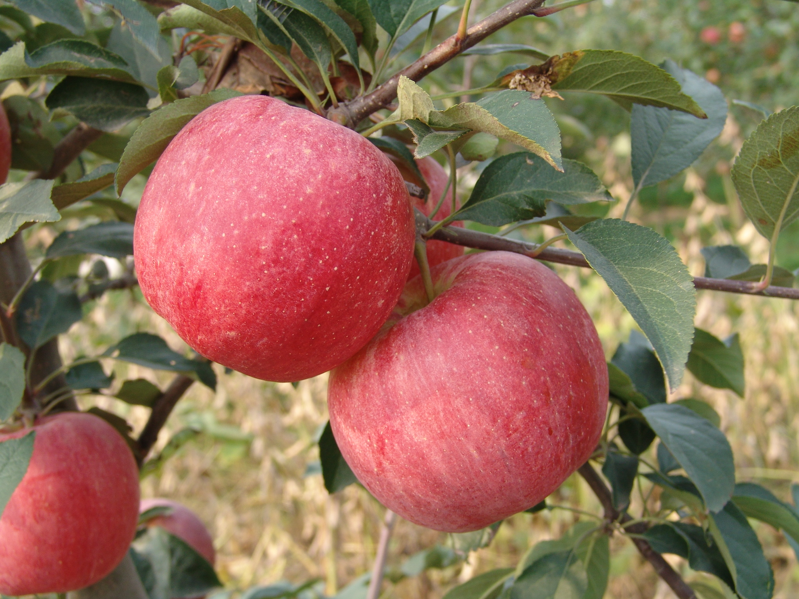

|

|
|
苹果-
苹果(Malus pumila Mill)，是落叶乔木，通常树木可高至15米，但栽培树木一般只高3-5米左右。
树干呈灰褐色，树皮有一定程度的脱落。苹果树开花期是基于各地气候而定，
但一般集中在4-5月份。苹果是异花授粉植物，大部分品种自花不能结成果实。
一般苹果栽种后，于2-3年才开始结出果实。果实一般呈红色，但需视乎品种而定。
苹果树的果实富含矿物质和维生素，为人们最常食用的水果之一。果实成长期之长短，
一般早熟品种为65-87天，中熟品种为90-133天，晚熟品种则为137-168天。在一般情形下，
栽种后苹果可有15-50年寿命。
|
|
|